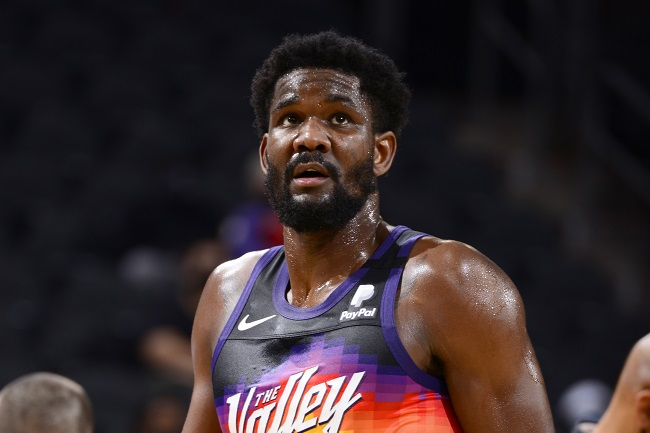
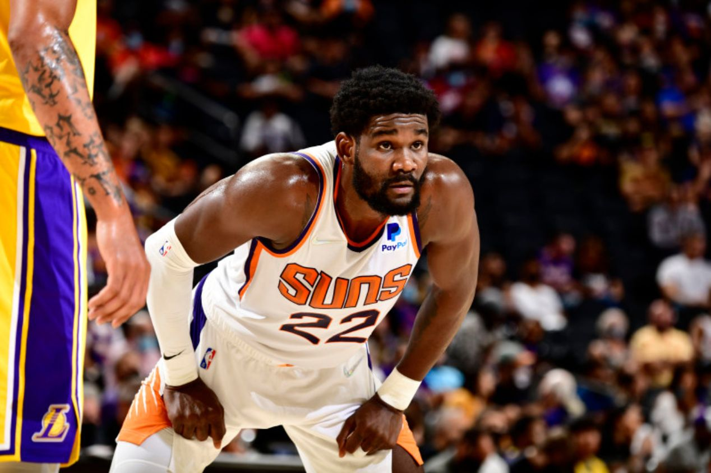

O agente livre restrito do Phoenix Suns, Deandre Ayton, assinou uma oferta de contrato máximo de quatro anos e US$ 133 milhões (R$ 723 milhões pelo câmbio atual) com o Indiana Pacers, disseram seus agentes Bill Duffy e Nima Namakian à ESPN na quinta-feira.
Por ele ser um agente livre restrito, os Suns têm dois dias para igualar a maior oferta para um atleta deste grupo da história da NBA e manter Ayton – ou deixá-lo ir para os Pacers sem nada em troca. A oferta de Ayton supera o acordo de quatro anos e US$ 107 milhões assinado por Otto Porter Jr. com o Brooklyn Nets em 2017 - um acordo que o Washington Wizards acabou igualando.
Os acordos de assinatura e troca não serão mais permitidos quando Ayton assinar a folha de oferta com Indiana. Se os Suns igualarem a folha de oferta, eles não poderão trocar Ayton para nenhum lugar até pelo menos 15 de janeiro - e não poderão trocá-lo com Indiana por um ano.
Namakian, da Innovate Sports, e Duffy, da BDA Sports e WME, insistiram com os Suns que poderiam encontrar uma oferta máxima de contrato para Ayton no mercado e agora a estão entregando com a proposta dos Pacers. Os Suns nunca fizeram uma oferta a Ayton, sugerindo que não o valorizavam como um jogador de contrato máximo. Se não igualarem proposta, os Suns perderão a primeira escolha geral sem compensação.
Depois de figurar no time de calouros em 2019, Ayton se tornou um pivô titular de qualidade, com média de 16,3 pontos e 10,5 rebotes por jogo, enquanto ajudou a liderar a defesa de Phoenix durante sua campanha para as Finais da NBA de 2021 - a primeira vez que a franquia chegou na decisão da liga desde que Charles Barkley liderou o Suns em 1993.
 